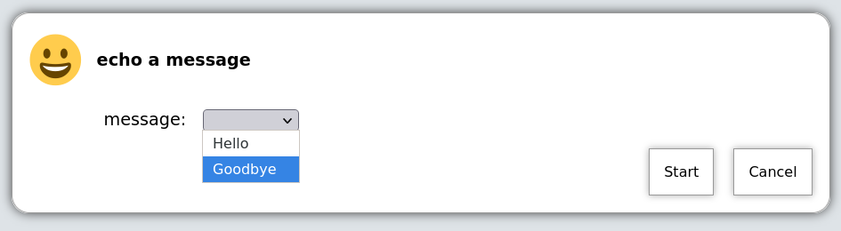
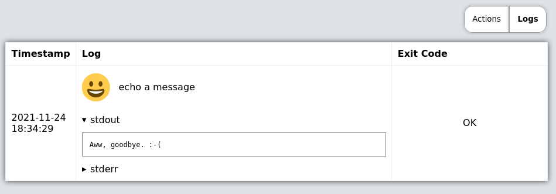

5.4. Dropdown choice arguments
Predefined choices are normally the safest type of arguments, because users are limited to only enter values that you specify.
actions:
- title: echo a message
icon: smile
shell: echo "{{ message }}"
arguments:
- name: message
choices:
- title: Hello
value: Hello there!
- title: Goodbye
value: Aww, goodbye. :-(
Note that when predefined choices are used, the argument type is ignored.
This is what it looks like in the web interface;

Then finally, when you execute this command, it would look something like this (remember that this is just a basic "echo" command).
